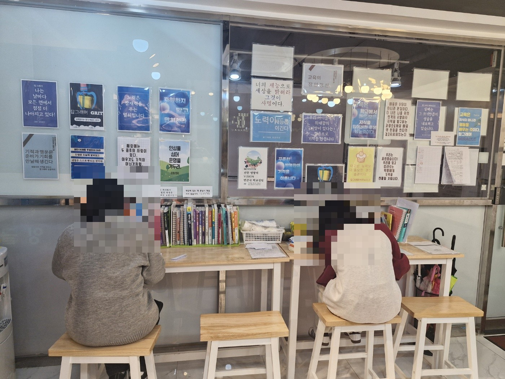
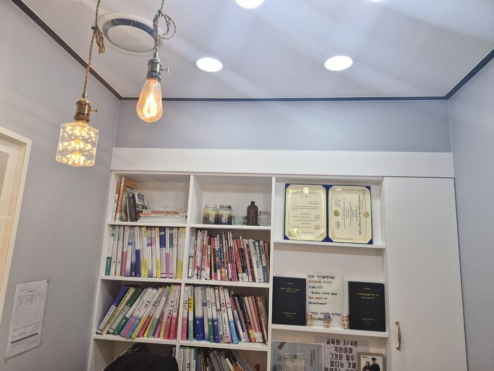

지금 등급이, 끝이 아니니까.
약점부터 다시 잡는 영어, 탑그래머.
그래머만 잘하는 학원이 아니라,
그래머 공식이 있는 학원입니다.
독자 개발 10단계 문법 암기공식으로 '왜 틀리는지'부터 잡습니다. 중1부터 고3 수능까지, 화정·행신에서 학생 1명을 200명처럼 생각하는 탑그래머가 끝까지 함께합니다. 1:200의 법칙을 항상 생각합니다.
편입교수 출신 원장 포함, 인서울 상위대 10년 이상 베테랑 강사진이 각각 다른 방식으로 학생의 성향과 실력에 맞게 핵심만 콕콕 훈련시킵니다.
Grace 그래쌤 원장 직강 · 고3 지도 20년+ | 2011~2026 누적 SKY 20명+(서울대 5명 포함) · 의대 2명 합격
레벨테스트 후 현재 약점 · 내신 대비 방향 · 반 배정 가능 여부를 안내해 드립니다.
1등급 배출 인원은 최근 수년간 수능 기준 본원 고3 수강생의 자체 집계 연평균이며, 합격·성적 실적은 2011~2026 지도 사례 기준입니다. 결과는 학생별 학습 상황에 따라 다를 수 있습니다.
탑그래머에서 영어가 오르는 이유
성적은 우연이 아니라 순서입니다. 막힌 곳을 찾고 → 공식으로 반복하고 → 조교와 1:1로 무한반복 검증하고 → 학교 시험으로 마무리합니다.
틀리는 이유가 보이면, 공부는 막막함이 아니라 깨달음이 됩니다.
탑그래머는 네가 어디서 막히는지부터 확인하고, 문법·독해·내신·모의고사를 각각 다른 방식으로 다시 훈련시킵니다.
조교 밀착 1:1 테스트학생 4~5명당 조교 1명이 1:1로 단어·숙어·문법공식을 테스트합니다. 다의어·다품사까지, 틀린 것만 무한반복합니다.
오르는 4단계
- 1약점 진단감으로 풀던 습관과 막힌 문법을 레벨테스트로 정확히 찾습니다.
- 210단계 문법공식 반복복잡한 문법을 10단계로 쪼개, 시험장에서 꺼내 쓸 때까지 반복해 체화합니다.
- 3유형별 스킬 · 백지테스트유형별 스킬을 익히고, 배운 걸 직접 설명하는 백지테스트와 실전 모의고사로 '아는 척'을 걸러냅니다.
- 4학교별 내신 마무리시험 5~6주 전, 학교별 1~4권 시크릿 제본교재로 내신을 마무리합니다.
나와 똑같은 고민을 극복한 선배들의 실제 변화
중1부터 6년 내내 탑그래머에 다녔는데, 사실 중간에 슬럼프가 있었어요. 선생님이 수업 후 2시간 동안 저를 설득해 주시고 동기부여 해 주셔서 마음 잡고 끝까지 잘해낼 수 있었어요. 2026년 3학년 기말 1등급 받고 선생님을 뵈러 갔는데, 저보다 더 기뻐해 주셔서 감사했어요.
방학밖에 시간이 없어 방학 때 쌤한테 모의고사 유형별 스킬을 배웠어요. 처음엔 올릴 수 있을까 반신반의했는데, 쌤의 통찰력 독해 방식 덕분에 점점 자신감이 생겼고 그 어려웠다는 2024학년도 불수능에서 1등급을 받을 수 있었어요. 1등급 받던 친구들이 2등급 받을 때 3등급이던 제가 1등급을 받아 기적이었어요. 할 수 없다고 생각할 때 할 수 있다고 용기를 불어넣어 주셔서 자신감을 가질 수 있었고, 좋은 결과로 이어진 것 같아요.
저는 영어 학원을 다닌 적도 없고 완전 이과 성향이라 영어를 제일 싫어하는 학생이에요. 과연 나 같은 학생이 영어가 단기간에 오를 수 있을까 했는데, 문법 공식 외우고 문제 푸니까 갑자기 정답률이 올라서 저도 깜짝 놀랐어요. 쌤이 하라는 대로 하고 기말고사를 쳤는데, 난이도가 어려워서 아이들이 다 떨어졌는데 저만 24점 올라 100점 받았어요. 정말 감격해서 100점 시험지를 한동안 제 방 잘 보이는 곳에 붙여놨어요. 우리 반 나만 영어 100점이라니… 믿기지 않았어요. 쌤들 정말 감사해요!
쌤을 만난 건 고2였어요. 제가 고3까지 영어 1등급이 안정적으로 나오도록 도와주셨고, 고3 때 정말 많이 힘들었는데 항상 무한 격려와 힘을 주셨어요. 그 암흑 같은 힘든 기간 동안 쌤의 무한 긍정 에너지 덕분에 2026학년도 카이스트에 총장 장학생으로 당당히 붙을 수 있었어요. 연말에 친구들과 쌤 집에서 손수 만드신 음식으로 연말 파티도 해 주시고, 쌤 정말 감사합니다.
중학교 때 10단계 문법 공식으로 영어 기본을 철저하게 다져 놓은 것이 고등학교 때 많이 도움이 되어 영어는 항상 1등급을 받았어요. 수능 후에도 쌤이 연락 주셔서 탑그래머 학원에서 조교 아르바이트를 꾸준히 하면서 사회생활과 자립 능력도 배우고 군대에 가게 되었네요. 공부뿐 아니라 성공하는 사람의 태도와 가치관, 긍정적인 마음가짐을 많이 배우게 되어 정말 감사드립니다.
* 2011~2026 본원 지도 사례 기준 · 성적 향상 결과는 개인별 학습 상황에 따라 다를 수 있습니다. 학교명은 재학 학교 표기일 뿐 해당 학교와의 제휴를 의미하지 않습니다.
* 대학 진학·장학생 선발·성적 등은 학생 개인에게 귀속되는 결과이며, 본 후기는 동일한 결과를 보장하지 않습니다. 본원은 영어 과목 지도를 담당했습니다.
합격 실적은 2011~2026 본원 수강생 지도 사례 자체 집계(중복 제외)이며, 결과는 학생별로 다를 수 있습니다.
왜 탑그래머인가
학원을 여러 곳 옮겨 다녀도 영어가 안 잡혔다면, 이유는 하나입니다. 문법과 품사별 단어의 뼈대가 없기 때문입니다.
10단계 문법 암기공식
20년 현장에서 다듬은 독자 개발 암기공식. 복잡한 영문법을 10단계로 세분화해, 연상암기법으로 체계적으로 체화하도록 지도합니다.
조교 밀착 테스트 시스템
2026년 현재 조교 25~30명이 함께하며, 학생 수가 늘수록 조교도 계속 충원합니다. 학생 4~5명당 조교 1명이 수업 전후로 1:1 단어·숙어·영작 테스트를 다의어·다품사까지 확인하고, 당일 배운 내용은 당일 쪽지테스트로 점검합니다. 조교의 약 80%는 수능·내신 영어에서 2등급 이상을 받은 탑그래머 출신으로, 현재 서울 소재 대학에 재학 중입니다(2026년 기준 자체 집계).
소수정예 · 고3 끝까지 책임
한 반 평균 6명(일반반 최대 6~8명·상위반 최대 8~10명), 1:1 과외식 PT수업으로 학생 한 명 한 명의 약점을 잡아, 중등부터 고3 수능 이틀 전까지 끝까지 함께합니다.
탑그래머만의 학습 시스템
2011년부터 다듬어 온 화정·행신 소수정예 그룹과외식 영어. 중1부터 고3 수능까지, 한 명도 놓치지 않습니다.
선배 조교 밀착 멘토링
탑그래머 출신 선배 조교가 백지 테스트와 다의어·다품사 점검으로 밀착 관리하고, 진로까지 멘토링합니다.
소수정예 평균 6명
한 반 평균 6명(일반반 최대 6~8명·상위반 최대 8~10명) 그룹과외식 수업. 학생 한 명 한 명의 약점을 직접 살피고, 필요하면 1:1 과외식 PT수업까지 운영합니다.
주 2~3회 모의고사 훈련
중1부터 모의고사 유형별 풀이 스킬과 오답 루틴을 훈련합니다. 고등 내신 범위인 기출 모의고사 5~10개년을 5~10회독하며 반복해 풀어, 내신 범위를 미리 체계적으로 대비합니다.
다의어·다품사 암기법
자체 제작한 다의어·다품사 암기법과 단어·숙어장 4~5회독으로, 단어의 여러 뜻과 쓰임까지 정확하게 잡아줍니다.
학교별 기출·시크릿 자료
학교별 출제 경향을 분석한 자체 제작 시크릿 제본 교재 1~4권을 시험 기간에 무료로 배포합니다. 수업은 단어·숙어·영작책을 포함한 시중교재 4~5권으로 진행합니다.
듣기·독해·문법 전 영역 통합
한 수업 안에서 듣기·배경지식·모의고사 유형별 스킬·문법까지 빠짐없이 다룹니다. 쓰고 말하기 테스트를 반복해서 철저히 준비합니다.
하브루타식 질문·설명 수업
배운 문법 공식을 학생이 직접 설명하는 1:1 백지 테스트와 질문식 쌍방향(OUTPUT) 수업. '아는 것'을 넘어 '설명할 수 있는 실력'으로 완성합니다. 가르치듯 설명하는 것이 가장 확실한 공부입니다.
HAVRUTA · 질문하는 수업“질문 없는 성찰은 없고, 질문 없는 배움도 없다.”
탑그래머는 학생이 당연한 것도 새로운 관점으로 생각하고 바라보도록, 통찰력을 갖도록 끊임없이 질문하고 생각하게 하는 수업을 합니다.
기적을 만드는 탑그래머 스토리
고3을 책임진다는 것은 정말 부담스러운 일입니다. 더군다나 오랫동안 성적이 오르지 않아 주변에서 반쯤 포기하다시피 한 학생을 다시 일으켜 세운다는 것은 더 부담스러운 일입니다.
이번에 들어온 고3 학생이 그런 경우였습니다. 열정은 있는데 성실하지 않아 자꾸 늦고, 숙제를 안 해 오고, 점수는 최하위권이라, 스스로도 영어는 안 되는 과목이라며 반쯤 포기하고 있던 힘든 상황이었습니다. 하지만 우리는 그 학생의 가능성을 보았습니다. 태도가 바르고 마음이 따뜻한 학생이라 더 정이 갔습니다. 단지 공부 습관이 안 잡혀 있고, 운동만 열심히 했던 눈이 선한 학생이었습니다.
우리 교사들은 그런 학생일수록 더 붙잡고 바른 길로 가도록 따뜻한 한마디라도 더 해 줘야 한다고 생각합니다. 그래서 가르치기로 결심하고, 조는 학생을 불러다 반복해서 가르치기를 두 달째… 드디어 이 학생이 시험 당일 시험을 보고 나서 기쁜 목소리로 전화를 걸어 왔습니다.
“쌤! 저 45점 올랐어요. 포기하지 않고 열심히 가르쳐 주셔서 감사합니다. 쌤 덕분에 내신 포기 안 하고 방어할 수 있었어요!”
우리 아이들에게는 정말, 진정으로 위대함의 씨앗이 있습니다. 그것을 믿고 기대해 주면, 기대해 준 만큼 엄청난 기적을 보여 줍니다. 시험 기간에는 주 6일, 때론 주 7일까지 수업하느라 목이 아프고 정말 힘들 때도 많지만, 단 한 명이라도 엇나가지 않도록 우리 선생님들은 오늘도 노력하고 또 노력합니다. 우리 아이들 한 명 한 명이 너무 소중하기 때문입니다.
그래서 우리는 항상 1:200의 법칙을 생각하며,
학생 1명을 200명처럼 생각하려 노력합니다.
* 한 수강생의 개별 사례이며, 평균적·보장된 결과가 아닙니다. 본인·보호자 동의를 받아 전하며, 성적 향상 폭은 학생별 학습 상황에 따라 다를 수 있습니다.
대치동 노하우를, 우리 동네에서
대치동 그룹과외팀·강남 서울대반 관리, 그리고 대치동·반포에서 자녀를 직접 키운 학부모 경험까지 갖춘 원장이 직접 설계한 교육 시스템을 화정·행신 학생에게 맞춰 전합니다.
 행신캠퍼스 · "Never Give Up, Never Give In"
행신캠퍼스 · "Never Give Up, Never Give In"
"안되면 될 때까지" — Grit
탑그래머의 모든 공간에는 한 문장이 흐릅니다. Education first, and it has a time limit. 기적은 준비가 기회를 만날 때 생깁니다. 끈기(Grit)로 끝까지 밀어붙이는 학습 문화가 성적을 바꿉니다.

화정캠퍼스 · 자습 라운지집중되는 공간이 실력을 만듭니다
카페처럼 편안하지만, 공부에는 누구보다 진지한 공간. 개인 좌석·자습 부스·휴게 라운지까지, 학생이 오래 머물고 싶은 환경을 만들었습니다. 좋은 환경이 좋은 습관을, 좋은 습관이 좋은 성적을 만듭니다.

"Every child has the seed of Greatness"내신 5~6주 대비 · 자체 제작 교재
시중교재 2~3권에 더해, 학교별 출제 경향을 분석한 시크릿 제본 교재 1~4권을 무료 배포합니다. 내신 시험 5~6주 전부터 학교별 맞춤 자료로 집중 대비. 학교별 맞춤 자체 제작 자료로 내신 대비를 돕습니다.
사진으로 보는 탑그래머
밝고 쾌적한 두 캠퍼스를 미리 둘러보세요. 사진을 클릭하면 캠퍼스 안내로 이동합니다.


원장이 직접 가르칩니다
편입 3년 · 고3 20년+ 경력의 Grace 그래쌤 원장이 중1부터 고3 수능까지 직강합니다.

Grace 그래쌤 원장
대학편입 문법·독해 교수 출신으로, 대치동에서 서울대반 그룹과외팀을 이끌고 반포에서 의대 준비생 영어를 지도한 경력을 갖췄습니다. 자체 개발한 10단계 문법 암기공식·다의어 암기법·탑그래머 통찰독해로 학생 한 명 한 명을 직접 지도하며, 2011년부터 의대 2명을 비롯해 SKY·카이스트·홍익대 미대 등 명문대에 20명 이상을 합격시켜 왔습니다.
"모든 아이에게 위대함의 씨앗이 있다는 믿음으로, 안되면 될 때까지 끝까지 함께합니다."
합격 실적은 2011~2026 본원 수강생 지도 사례의 자체 집계이며, 결과는 학생별 학습 상황에 따라 다를 수 있습니다.
학부모님이 먼저 추천합니다
네이버 영수증 인증을 거친 실제 수강 가정의 리뷰입니다. 개인 경험이며 학습 결과를 보장하지 않습니다.
선생님이 정말 열정적이세요.
친절하고 좋아요. 선생님이 열정적이세요.
굿! 선생님이 열정적이세요.
꼼꼼히 잘 가르쳐 주십니다.
가까운 캠퍼스로 오세요
행신캠퍼스와 화정캠퍼스, 두 곳 모두 중등·고등 수능/내신을 운영합니다.
우리 아이의 영어, 지금 시작하세요
레벨테스트로 현재 실력을 정확히 진단하고,
10단계 문법 암기공식으로 영어를 체계적으로 완성해 갑니다.
행신캠퍼스 031-938-8889 | 화정캠퍼스 031-994-3090